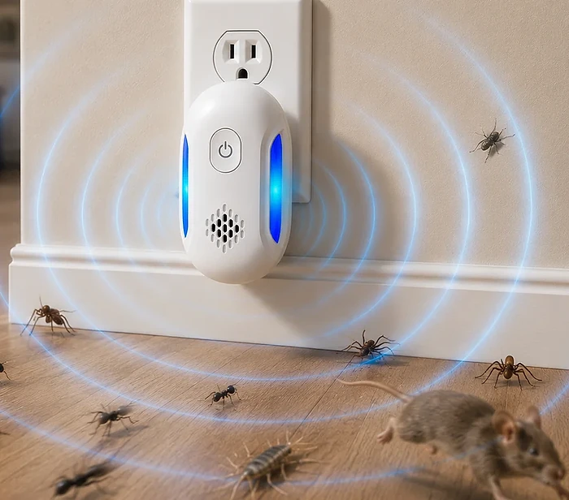
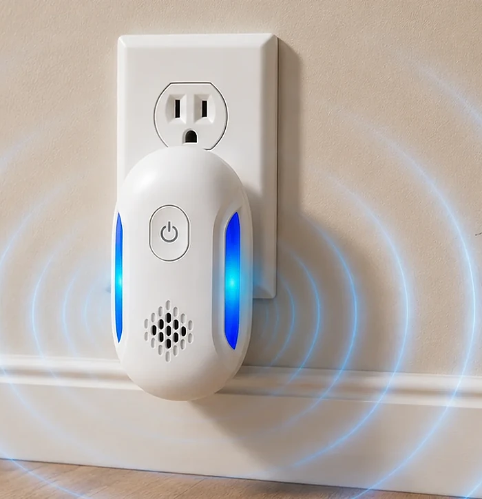

What Is Vermix Pulse Pro And How Does It Work?
Vermix Pulse Pro is a small plug-in pest repeller. According to the official website, you plug it into a standard wall outlet and it runs around the clock to drive roaches, mice, ants, spiders and other pests out of the room, without sprays, traps or chemicals.
The seller describes a "Triple-Pulse" system that combines three kinds of signals. Ultrasonic sound is meant to be unpleasant for pests, an electromagnetic pulse is said to travel through the home's existing electrical wiring into wall cavities, and a third "bionic" frequency is described as part of the mix. The device is said to keep shifting between these frequencies so pests cannot get used to one constant signal.
The website says the device makes no noise people can hear, has no smell, needs no refills or batteries and uses very little electricity. It is presented as safe around children, dogs and cats, and as a way to reduce or replace regular exterminator visits.
It is worth knowing how this category is viewed. Ultrasonic and electromagnetic pest repellers have been sold for decades, and independent studies have found mixed and often short-lived effects. The U.S. Federal Trade Commission has warned sellers in the past that strong claims for these devices must be backed by competent evidence. The Vermix pages do not cite any test, study or lab report for their claims.
There are also inconsistencies on the official pages. The presell article speaks of "120 sq ft of full protection" per unit, while the order page advertises "1600 sq ft coverage". Ultrasound also does not pass through walls or furniture, which matters for claims about reaching pests "inside the walls". Results can vary widely from home to home, and an active infestation may still require professional pest control.
Vermix Pulse Pro Features
According to the official website, Vermix Pulse Pro offers:
Triple-Pulse system: ultrasonic, electromagnetic and "bionic" frequencies in one unit.
Shifting frequencies: the pattern is said to change constantly so pests do not adapt.
Plug-in design: fits a standard U.S. outlet, no batteries or refills.
Chemical-free: no sprays, poisons or odors.
Silent operation: designed to be inaudible to people.
Low power use: meant to run 24/7 all year.
The product images show a white oval unit with a power button, a speaker grille and two blue light strips on the sides. Several images on the site appear to be illustrations rather than product photos, including scenes with puppies, a child and pests fleeing across a floor.
The website does not list technical specifications such as the frequency range, the power rating, the dimensions or any safety certification for an electrical device. It also does not say which pests the unit was tested on, how long the unit is expected to last or whether it comes with a manufacturer warranty beyond the money-back guarantee. Buyers who want to compare it with other repellers therefore have little hard data to work with.
Vermix Pulse Pro How To Use
Use is simple according to the official website: plug the unit into a wall outlet in the room with pest activity, switch it on and leave it running. The seller suggests placing one unit per room, for example in the kitchen, a bedroom and the basement, because each unit is meant to cover the room it is in.
For the best chance of results, plug the device into an outlet close to where you see activity and keep it free of furniture, curtains or boxes in front of it, since ultrasound is blocked by solid objects and soft materials. Give it a couple of weeks before judging, as the website itself talks about results within days to weeks.
Combine the device with basic prevention: store food in sealed containers, take out trash often, fix leaks, seal gaps around pipes and doors and keep crumbs off floors and counters. A repeller alone will not remove the food and water that attract pests in the first place.
One important safety point: ultrasonic devices can disturb pet rodents and rabbits, such as hamsters, guinea pigs, rats and chinchillas, and some dogs and cats may react to high frequencies. Keep the unit away from these animals and unplug it if a pet seems stressed. If you see signs of a serious infestation, droppings, nests or damage to wiring, contact a licensed pest control professional.
Vermix Pulse Pro – Refund Policy
According to the official order page, Vermix Pulse Pro comes with a 90-day money-back guarantee. The seller states that you can send the item or items back in the original packaging to receive a full refund or a replacement, less shipping and handling.
This means the shipping costs are not part of the refund, and you may have to pay for return shipping yourself. Keep the original box and packaging until you are sure you want to keep the device, because the guarantee asks for the item to be returned in its original packaging.
The site is run under the Onninest name, and support is listed at the email address cs@onninest.com. The general terms of the website refer to a separate return policy for products sold online. Before ordering, read the current refund and shipping terms on the official website, since conditions can change.
If you plan to test the device, mark the delivery date on your calendar so you have enough time to judge results and still return it within the 90 days. Write down your order number and keep the order confirmation email. If you contact support for a return, ask for written return instructions and the correct return address, and keep the shipping receipt and tracking number until the refund appears on your statement.
Vermix Pulse Pro Customer Reviews
-
Jason R.Verified Purchase
"I was paying for regular treatments, but the pests would only disappear temporarily before coming back. After using this device, I noticed a major difference within a couple of weeks. Months later, the problem still hasn't returned, and I ended up cancelling the service altogether."
-
Tom H.Verified Purchase
"I tried three different ultrasonic repellers before. They worked for maybe a week, then the mice came right back. This one uses shifting frequencies and the difference is night and day. Four months pest-free and counting."
-
Natalie F.Verified Purchase
"I have three cats and a toddler, so chemical sprays were never an option. This is the first pest solution that actually works without putting my family at risk. The ants are gone, the spiders are gone, and my cats don't even notice it's there."
Vermix Pulse Pro – Where To Buy
Vermix Pulse Pro is sold through the official website on onninest.com, which has an article page about the device and an order page where you choose how many units you want. The offer is aimed at customers in the United States, and the unit is shown with a standard U.S. plug.
Plug-in pest repellers that look almost identical are sold by many brands on large marketplaces, often under changing names. If you buy a look-alike elsewhere, you cannot be sure it is the same device, and the 90-day guarantee from the official seller will not apply.
The official pages use urgency messages, phrases like "Exterminator Killer" and claims that pest control companies "don't want homeowners seeing this". Don't let that rush you. Before you order, check the order summary, the number of units, the shipping address and the refund terms, and make sure you are on the onninest.com domain. The website does not name a company behind the brand beyond Onninest and a support email.
To ensure you’re getting the authentic product, most users choose to visit the official website.
Is Vermix Pulse Pro A Scam?
Based on the information available, there is no sign that Vermix Pulse Pro is a scam in the sense of a store that takes orders and ships nothing. The device is sold through an official website with an order page, a 90-day money-back guarantee, terms, a privacy policy and a support email.
On the plus side, the device is chemical-free, easy to use and covered by a long return window, which gives buyers time to see whether it helps in their home.
There are, however, points that deserve attention. The marketing makes strong claims, such as pests being driven out of walls, results within 48 hours and a "pest-free home permanently", without citing any test or study. Independent research on ultrasonic repellers is mixed, and regulators have warned about unsupported claims in this product category. The coverage figures on the site contradict each other (120 vs. 1600 sq ft), and the "Licensed Pest Control Technician" and "Property Manager" quotes cannot be verified.
The website also names no company address, and refunds do not include shipping and handling.
If you see Vermix Pulse Pro as a low-effort extra step alongside good hygiene and sealing entry points, and keep your expectations realistic, ordering from the official website is a reasonable low-risk test thanks to the 90-day guarantee. For an active infestation, a licensed professional remains the more reliable option.
For those who want to verify product details or check current availability, the official Vermix Pulse Pro website remains the safest option.
